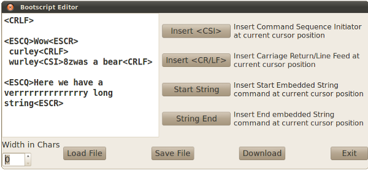

BOB-4 can store up to 1024
characters of bootscript text in a reserved segment of flash memory. Bootscripts
are always executed immediately after BOB-4 system initialization, before processing
any data received through the control ports. Bootscript Editor offers a convenient
way to create, edit, save, and download bootscripts to BOB-4 modules.
Bootscript Editor saves bootscript files in plain ASCII format. This allows
editing with many standard text editors, but methods for entering the <ESC>
code will vary.
To clear an existing BOB-4 bootscript, just execute a Download with the edit
window empty.
When downloading a bootscript to BOB-4, Bootscript Editor automatically brackets
it with String Start (<ESC>X) and String End (<ESC>\) codes, and
then issues the Capture Bootscript (<CSI>8v) and Save Configuration (<CSI>1v)
commands. These commands must therefore not be included in
the user's bootscript. Almost any other sequence of text and commands that is
legal for transmission to BOB-4 through a control port is also acceptable in
a bootscript, but there are a couple of important exceptions:
In general, configuration
commands don't belong in bootscripts unless they are meant to be temporary.
It's usually best to store a new configuration instead of repeatedly issuing
an identical salvo of configuration commands. Users might see this issue differently,
especially when there's a desire to keep all of BOB-4's setup data in one block
of controller source code. Be especially careful of bootscript configuration
changes that affect screen geometry. As noted in the BOB-4
Application Guide, the display will be cleared after an unpredictable delay
time. This often has the effect of immediately erasing text that was printed
by the bootscript.
Edit Window
Use this window to enter and edit bootscript text. To insert BOB-4 control codes,
see comments below.
Insert <CSI>
Insert the two-byte Control Sequence Introducer to preface BOB-4 commands
in the bootscript.
Insert <CR/LF>
Insert a Carriage Return & Line Feed pair into the bootscript. This is necessary
to distinguish executable CR/LF codes from CR/LF used for text
formatting in the edit window.
String Start
Insert a String Start control sequence, marking the start of a text string that
will be loaded into BOB-4's String buffer when the bootscript executes.
Some BOB-4 commands (e.g. Crawl) act on text which must be loaded into the String
buffer prior to issuing the command. Comments may be embedded in bootscripts
by bracketing them with String Start and String End codes, but available bootscript
storage space is reduced.
String End
Insert a String End control sequence, marking the termination of a text string
that will be loaded into BOB-4's String buffer when the bootscript
executes.
Save
Save the currently open bootscript to a disk file (via Save As dialog).
Load
Load an existing BOB-4 bootscript file from disk.
Download
Download the currently open bootscript to a BOB-4 module and save it in flash
memory, using communication parameters previously selected in the Serial menu.
Previous contents of the bootscript memory are destroyed. Bootscripts cannot
be downloaded through the debug port.
Exit
Quit the Bootscript Editor.